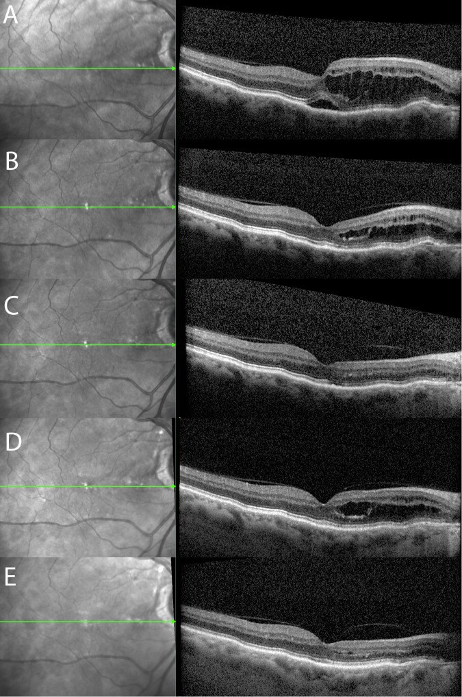
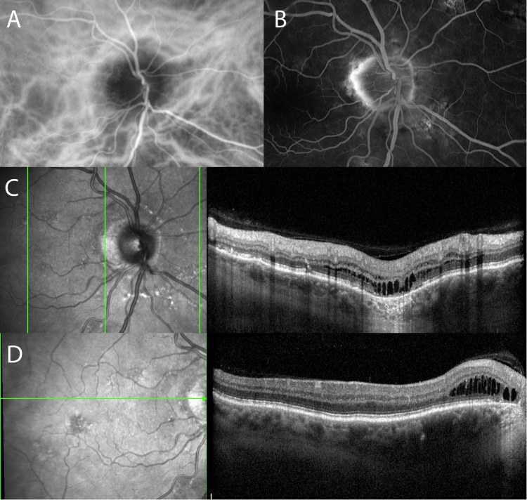
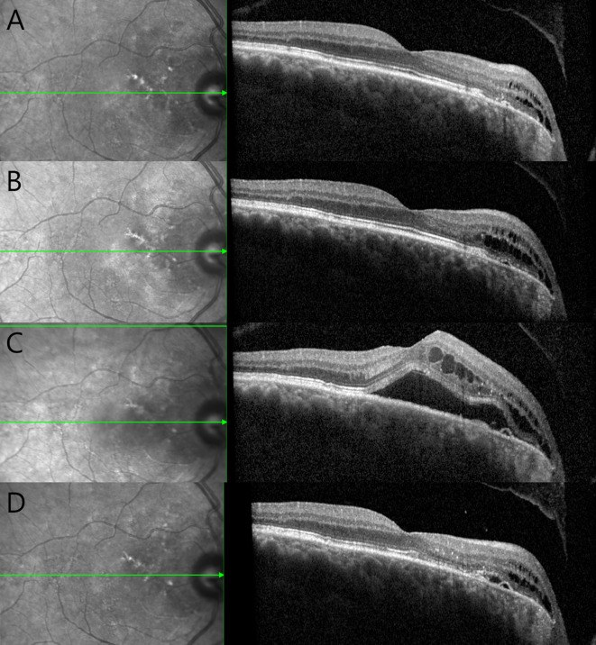
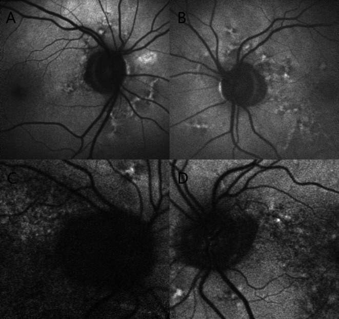

405 — Hội chứng pachychoroid quanh đĩa thị (PPS): "phù đĩa thị giả", túi dịch quanh đĩa & ngưỡng hắc mạc 300 µm
Tags: pattern:phu-dia-thi pattern:hac-mac-day pattern:dich-voi-hoang-diem pattern:bo-hoang-diem vung:dia-thi vung:hoang-diem vung:hac-mac score:CT-300um protocol:OCT-EDI protocol:FA-ICGA protocol:OCTA
Mức chắc chắn (certainty): tổng hợp y văn (literature synthesis) — ghép đoàn hệ tự nhiên 24 mắt/14 bệnh nhân (Ophthalmol Ther 2025, PMC12534684), bài phân tích cơ chế – hình ảnh (Eye 2024, PMC11584888), tổng quan hình ảnh bệnh pachychoroid (Turk J Ophthalmol 2025, PMC11866993), loạt 3 ca eplerenone (Case Rep Ophthalmol 2025, PMC12674667) và ca micropulse 577 nm (Am J Ophthalmol Case Rep 2022, PMC9706522). Không có ca do nhóm tự chụp.
Câu hỏi thực hành: nam 68 tuổi, nhìn mờ nhẹ mắt phải 2 tuần, không đau, không đau đầu; đáy mắt đĩa thị trông "đầy", bờ mờ nhẹ, OCT có nhiều nang dịch trong võng mạc phía mũi hoàng điểm nối liền bờ đĩa, hắc mạc quanh đĩa dày, mạch Haller giãn. Câu hỏi: đây có phải phù đĩa thị do tăng áp lực nội sọ không, có cần chọc dò tủy sống không, và khi nào chỉ theo dõi? Bài chốt ba quyết định: (1) dịch nằm TRONG võng mạc và bắt đầu từ bờ đĩa = PPS, không phải phù đĩa thị; (2) hắc mạc quanh đĩa dày > 300 µm + mạch giãn là chốt cơ chế; (3) phần lớn chỉ theo dõi — chỉ điều trị khi dịch chạm hoàng điểm kéo dài hoặc có hình thái chồng lấp CSCR. Nối 482 – Tân mạch hắc mạc sau CSCR mạn, 470 – CSCR do corticosteroid, 433 – Phù đĩa thị vs drusen.
1. Tổng quan bệnh học – cơ chế hình ảnh: vì sao dịch "rỉ" vào võng mạc chứ không vào dưới võng mạc
- Vị trí của PPS trong phổ bệnh pachychoroid: PPS được mô tả lần đầu năm 2017–2018 (Phasukkijwatana và cộng sự, Retina), nằm cùng phổ với CSCR, PPE, PNV, PCV, hốc hắc mạc khu trú (FCE). Điểm khác biệt: tổn thương tập trung quanh đĩa thị và hoàng điểm phía mũi, không ở hoàng điểm trung tâm như CSCR.
- Cơ chế — chuỗi ba bước:
- Nối tĩnh mạch giữa các vòng xoáy (intervortex venous anastomoses) hình thành quanh đầu thần kinh thị thay vì ở hoàng điểm (CSCR). Trên ICGA, các vòng nối này lộ ra thành vùng phân thủy bất thường quanh đĩa (Eye 2024, PMC11584888).
- Ứ trệ → giãn mạch Haller (pachyvessels) + tăng tính thấm + tăng áp lực thủy tĩnh trong hắc mạc quanh đĩa. Hắc mạc dày là điều kiện nền, không phải hậu quả của dịch.
- Teo biểu mô sắc tố quanh đĩa (peripapillary atrophy, PPA) làm mất hàng rào RPE → dịch rỉ từ hắc mạc vào võng mạc tại bờ đĩa, tạo "túi dịch quanh đĩa" (peripapillary fluid pocket) rồi lan dần ra hoàng điểm phía mũi.
- TẠI SAO dịch TRONG võng mạc mà không phải dưới võng mạc: áp lực thủy tĩnh trong hắc mạc của PPS thấp hơn CSCR — đủ để dịch thấm qua vùng RPE teo nhưng không đủ bóc RPE thành bong thanh dịch. Vì vậy đa số PPS không có PED, không rỉ huỳnh quang trên FA, và dịch đọng thành nang trong võng mạc (Eye 2024). Khi áp lực đủ cao (hoặc có CSCR chồng lấp), mới xuất hiện PED + dịch dưới võng mạc.
- Ngưỡng định lượng phải thuộc:
- Hắc mạc dày = chiều dày hắc mạc dưới hoàng điểm > 300 µm trên OCT EDI/SS-OCT (Turk J Ophthalmol 2025, PMC11866993); trong đoàn hệ PPS, chiều dày hắc mạc 321,5 ± 72,24 µm tại 1,5 mm và 204,38 ± 103,30 µm tại 3,0 mm tính từ tâm hoàng điểm.
- PPA có mặt ở 100% (14/14) bệnh nhân, chiều rộng trung bình 560 µm (157–1.135 µm) — đây là dấu hiệu nền giúp phân biệt với phù đĩa thị thật (Ophthalmol Ther 2025, PMC12534684).
- Tuổi 74 ± 7 (57–88), 71% hai bên (10/14), nam:nữ = 10:4, cận thị thấp/viễn thị nhẹ (trục nhãn 22,34 ± 1,30 mm) — chân dung điển hình là nam lớn tuổi, mắt viễn thị.
- Độ dày võng mạc vùng mũi trong (IN) 365,25 ± 53,50 µm và mũi ngoài (ON) 352,04 ± 57,57 µm lúc chẩn đoán.
- Diễn tiến tự nhiên (đoàn hệ 24 mắt, không điều trị): 10/14 không có triệu chứng, thị lực trung bình 0,05 logMAR và ổn định; dịch dao động lên xuống ("waxing and waning") rồi giảm: ON giảm −36,9 µm ở 2 năm (p = 0,034); IN giảm −40,75 µm ở 2 năm (p = 0,023) và −39,97 µm ở 3 năm (p = 0,042). 5/24 mắt có CSCR đồng thời, và khoảng 1/4 bệnh nhân phát triển PED thanh dịch + dịch dưới võng mạc trong quá trình theo dõi.
- TẠI SAO đây là "phù đĩa thị giả": đĩa thị trông đầy vì hắc mạc quanh đĩa dày đẩy RPE/đĩa ra trước, có thể kèm nếp gấp hắc mạc; nhưng không có tăng áp lực nội sọ, không mất xung tĩnh mạch tự phát, và RNFL không dày lan tỏa như phù đĩa thị thật. Dịch nằm trong võng mạc sát bờ đĩa, không phải dịch dưới võng mạc quanh đĩa kiểu phù gai.

Cùng một mắt PPS qua 5 mốc (Eye 2024, PMC11584888): dịch trong võng mạc tăng rồi giảm mà không can thiệp — bằng chứng cho "waxing and waning" và cho chiến lược theo dõi khi dịch ngoài hoàng điểm. Nguồn: CC BY 4.0, nguyên bản.2. Mẫu hình + chẩn đoán phân biệt theo vị trí & cơ chế (Gamut)
- Ba câu hỏi bắt buộc khi thấy dịch quanh đĩa:
- Dịch nằm ở đâu? Trong võng mạc (nang) → nghĩ PPS/CSCR mạn; dưới võng mạc → CSCR, phù đĩa thị, NAION; dưới RPE → PED, CNV.
- Dịch bắt đầu từ đâu? Từ bờ đĩa lan ra = PPS; từ hoàng điểm lan vào = CSCR.
- Hắc mạc có dày + mạch giãn không? Có = phổ pachychoroid; không = nguyên nhân đĩa thị/mạch máu/áp lực.
- Gamut theo cơ chế:
- Pachychoroid: PPS, CSCR (lan quanh đĩa), PNV, PPE.
- Bất thường cấu trúc đĩa: drusen đĩa thị, hố đĩa thị (optic disc pit), coloboma, PHOMS.
- Mạch máu: NAION/AION, tắc tĩnh mạch nhánh quanh đĩa, CNV quanh đĩa.
- Áp lực: tăng áp lực nội sọ (IIH, u não, huyết khối xoang).
- Viêm/u: viêm thần kinh thị, sarcoid, u màng não vỏ thị, di căn đĩa.
- Mnemonic "PPS = Peripapillary Pocket Syndrome": Peripapillary Pocket + Subretinal fluid chỉ khi chạm hoàng điểm; Pachyvessels; Steroid là yếu tố làm nặng.
- Bối cảnh gợi ý mạnh: nam > 60 tuổi, viễn thị, không đau, không đau đầu, tình cờ thấy trên OCT, u máu da/không, tiền sử dùng corticosteroid (làm nặng).
3. Bảng so sánh phân biệt (ma trận đối chiếu)
| Thực thể (entity) | Hình ảnh điển hình | Chốt vào (rule-in) | Chốt loại (rule-out) | Gợi ý xác nhận |
|---|---|---|---|---|
| PPS | Hắc mạc quanh đĩa dày, mạch Haller giãn; nang dịch TRONG võng mạc từ bờ đĩa lan ra mũi hoàng điểm; PPA; FA thường không rỉ | Túi dịch quanh đĩa + hắc mạc quanh đĩa > 300 µm + PPA + FA không rỉ | Dịch dưới võng mạc lan tỏa + rỉ huỳnh quang + không PPA → CSCR/phù đĩa thị | OCT EDI xuyên đĩa 2 bình diện; FAF; FA/ICGA; OCTA loại CNV |
| CSCR | Dịch dưới võng mạc hoàng điểm, PED/RPE bump, rỉ điểm trên FA; hắc mạc dày | Rỉ huỳnh quang khu trú + PED + dịch dưới võng mạc hoàng điểm | Dịch trong võng mạc bắt đầu từ bờ đĩa + không rỉ → PPS | FA/ICGA; OCT; hỏi corticosteroid |
| Phù đĩa thị / IIH | Đĩa phù hai bên, RNFL dày, mất xung tĩnh mạch, dịch dưới võng mạc quanh đĩa, não thất bình thường; áp lực mở > 25 cm CSF | Đau đầu + ù tai mạch đập + RNFL dày + áp lực mở > 25 cm CSF | Không đau đầu, RNFL bình thường, có PPA + hắc mạc dày → PPS | Đo áp lực mở; MRI/MRV; OCT RNFL |
| NAION | Phù đĩa một bên, đĩa nhỏ C/D thấp, khiếm khuyết thị trường theo chiều cao, không đau | Mất thị lực đột ngột không đau + phù đĩa + C/D nhỏ | Dịch trong võng mạc từ bờ đĩa + PPA + hắc mạc dày → PPS | Thị trường; OCT; hắc mạc dày có thể gặp trong NAION nên không loại trừ PPS |
| Drusen đĩa thị | Tự phát sáng trên FAF, nốt tăng âm trong đĩa, lõi giảm âm viền tăng âm trên OCT; thường không dịch | Nốt drusen + FAF tăng sáng + không dịch | Có túi dịch trong võng mạc + PPA → PPS | FAF, OCT, siêu âm B (drusen canxi hóa) |
| CNV quanh đĩa | PED xơ–mạch, xuất huyết, mạng mạch trên OCTA, rỉ trên FA | Mạng CNV trên OCTA + PED xơ–mạch + xuất huyết | Không mạng mạch, không xuất huyết → PPS | OCTA; FA; anti-VEGF nếu xác nhận |
| Hố đĩa thị (optic disc pit) | Hố nhỏ trong đĩa, dịch schisis-like lớp trong rồi bong lớp ngoài, thường gặp ở người trẻ | Hố đĩa + schisis + bong lớp ngoài | Không hố, dịch trong võng mạc từ bờ đĩa → PPS | OCT xuyên đĩa; chụp đáy mắt |

Đa phương thức ở một bệnh nhân PPS (Eye 2024, PMC11584888): (A) ICGA — nhiều vòng nối giữa các tĩnh mạch xoáy quanh đĩa thị; (B) FA — rỉ nhẹ phía thái dương đĩa trong vùng PPA; (C, D) OCT đứng và ngang — nang dịch trong võng mạc xuất phát từ vùng PPA quanh đĩa, lan dần ra ngoài. Nguồn: CC BY 4.0, nguyên bản.4. Protocol chụp + ngưỡng xử trí
- Bước 1 — OCT EDI/SS-OCT (bắt buộc, là "phim chẩn đoán"): chụp qua đĩa theo 2 bình diện (ngang + đứng), thêm lát cắt qua hoàng điểm phía mũi. Đo:
- Chiều dày hắc mạc tại 1,5 mm và 3,0 mm từ tâm hoàng điểm (hoặc điểm dày nhất trong 500 µm quanh bờ đĩa).
- Vị trí túi dịch: trong võng mạc hay dưới võng mạc; có PED không.
- PPA và mức lan của nó (so với chẩn đoán cũ).
- Bước 2 — FAF: PPA giảm sáng, viền tăng sáng; mô tả "dấu xương đùi" (femur sign) — vùng tăng/giảm sáng quanh đĩa và hoàng điểm tạo hình giống xương đùi (Turk J Ophthalmol 2025).
- Bước 3 — FA/ICGA (khi cần phân biệt CSCR/CNV): PPS thường không rỉ trong vùng PPA; nếu rỉ mạnh + PED → nghĩ CSCR/CNV chồng lấp. ICGA thấy vòng nối quanh đĩa và mạch Haller giãn.
- Bước 4 — OCTA: loại CNV quanh đĩa trước khi kết luận PPS (không có mạng mạch = PPS đơn thuần).
- Bước 5 — thị trường & RNFL: PPS có thể mở rộng điểm mù; RNFL không dày lan tỏa như phù đĩa thị. Nếu RNFL dày + đau đầu → đo áp lực mở trước khi gắn nhãn PPS.
- Ngưỡng điều trị (chỉ khi có chỉ định):
| Tình huống | Xử trí | Bằng chứng / con số |
|---|---|---|
| Dịch ngoài hoàng điểm, không triệu chứng | Theo dõi 3–6 tháng bằng OCT | 10/14 không triệu chứng; thị lực 0,05 logMAR ổn định; dịch tự giảm (PMC12534684) |
| Dịch chạm hoàng điểm kéo dài, hoặc PPS/CSCR chồng lấp | PDT là lựa chọn được khuyến nghị trong phổ pachychoroid | Bài phân tích khuyến nghị PDT; bằng chứng PPS còn nhỏ (Eye 2024) |
| Muốn điều trị nội khoa | Eplerenone 50 mg/ngày × 12 tháng | 3 ca: hắc mạc giảm 48 µm, thị lực tăng 10 chữ ở 75%, không tác dụng phụ (PMC12674667) |
| Rỉ khu trú, muốn tránh PDT | Micropulse 577 nm | 1 ca: dịch dưới võng mạc hết sau 6 tháng, 20/32 → 20/20 (PMC9706522) |
| Có CNV trên OCTA | Anti-VEGF | Chỉ khi xác nhận mạng mạch; không dùng mù |
| Đang dùng corticosteroid | Cân nhắc ngừng/giảm | Steroid là yếu tố nguy cơ của phổ pachychoroid; báo cáo "đáp ứng steroid" không có nhóm chứng (Eye 2024) |
flowchart TD
A[Dịch quanh đĩa thị trên OCT] --> B{Dịch TRONG võng mạc và bắt đầu từ bờ đĩa?}
B -->|Không| C[Xét phù đĩa thị, NAION, CSCR, CNV, hố đĩa]
B -->|Có| D[Đo hắc mạc quanh đĩa + tìm PPA + OCTA]
D --> E{Hắc mạc > 300 µm + PPA + không mạng CNV?}
E -->|Không| C
E -->|Có| F[Chẩn đoán PPS]
F --> G{Dịch chạm hoàng điểm hoặc có PED/SRF?}
G -->|Không| H[Theo dõi OCT 3-6 tháng]
G -->|Có| I[PDT hoặc eplerenone; anti-VEGF nếu có CNV]
H --> J[Chụp lại: dịch tăng, thị lực giảm thì điều trị]
- Theo dõi: OCT mỗi 3–6 tháng khi còn dịch; 6–12 tháng khi ổn định; ghi chiều dày hắc mạc, vị trí dịch, thị lực logMAR. Tái phát/tiến triển về hoàng điểm là lý do điều trị, không phải "hắc mạc dày" đơn thuần.
5. Biến thể bình thường và cạm bẫy
- Bẫy số 1 — gọi PPS là phù đĩa thị: đĩa "đầy" + PPA + hắc mạc dày rất dễ bị đọc là phù gai; chọc dò tủy sống ở người không tăng áp lực là thủ thuật không cần thiết, còn bỏ sót IIH thật nếu chỉ dựa vào "đĩa đầy". Chốt: RNFL + triệu chứng + áp lực mở.
- Bẫy số 2 — dịch trong võng mạc bị đọc là "phù võng mạc do đái tháo đường/tắc tĩnh mạch": PPS một bên hoặc hai bên không đối xứng, dịch sát bờ đĩa, không có xuất huyết/tân mạch đái tháo đường. Luôn hỏi tiền sử đái tháo đường, tăng huyết áp, thuốc.
- Bẫy số 3 — hắc mạc dày đơn thuần không phải PPS: chiều dày hắc mạc thay đổi theo tuổi, trục nhãn, tư thế đo; ngưỡng > 300 µm chỉ có nghĩa khi kèm dịch và PPA. Đừng gắn nhãn bệnh cho người cận thị nặng/hắc mạc dày không dịch.
- Bẫy số 4 — "u máu da không có thì không phải u mạch" (bài học từ u máu đường thở): ở PPS, không có dấu hiệu ngoài mắt là bình thường; chẩn đoán dựa vào OCT/FA.
- Bẫy số 5 — corticosteroid làm nặng bệnh: nhiều báo cáo dùng prednisolone tại chỗ cho PPS, nhưng không có nhóm chứng và steroid là yếu tố nguy cơ của phổ pachychoroid; "cải thiện" có thể là diễn tiến tự nhiên (Eye 2024).
- Bẫy số 6 — bỏ sót CNV: PPS có thể chồng lấp CSCR/CNV; OCTA trước khi kết luận "lành", vì anti-VEGF khác hoàn toàn theo dõi.
- Cạm bẫy mặt cắt: trên OCT một lát cắt đơn lẻ, nang dịch quanh đĩa có thể bị bỏ sót nếu cắt qua trục thái dương; luôn chụp 2 bình diện qua đĩa và lát qua hoàng điểm phía mũi.
6. Tự lượng giá — Blind Quiz
Ca 1 — Nam 65 tuổi, nhìn mờ nhẹ, đĩa thị "đầy", OCT có nang dịch phía mũi hoàng điểm.
- Câu hỏi: Dịch nằm ở lớp nào? Nó bắt đầu từ đâu? Dấu hiệu nào trên ICGA giải thích cơ chế?
Bấm để hiện đáp án (findings + chẩn đoán)
- Dấu hiệu (findings): (A) ICGA — vòng nối giữa các tĩnh mạch xoáy quanh đĩa; (B) FA — rỉ nhẹ trong vùng PPA; (C, D) OCT — nang dịch trong võng mạc xuất phát từ PPA sát bờ đĩa, lan ra ngoài; hắc mạc quanh đĩa dày, mạch Haller giãn.
- Chẩn đoán (diagnosis): PPS — không phải phù đĩa thị vì dịch trong võng mạc, bắt đầu từ bờ đĩa, và không có rỉ mạnh/PED.
- Vì sao: vòng nối quanh đĩa → ứ trệ hắc mạc → dịch rỉ qua PPA vào võng mạc.
- Nguồn ảnh: Eye 2024 (PMC11584888), CC BY 4.0.
Ca 2 — Cùng bệnh nhân, theo dõi 9 tháng không điều trị.

- Câu hỏi: Mô tả thay đổi qua các mốc. Điều này nói gì về chỉ định điều trị?
Bấm để hiện đáp án
- Dấu hiệu (findings): (A) baseline — nang dịch trong võng mạc; (B) 6 tháng — dịch tăng; (C) 8 tháng — PED thanh dịch + dịch dưới võng mạc; (D) 9 tháng — gần như hết.
- Chẩn đoán (diagnosis): PPS thể dao động tự nhiên, có giai đoạn chồng lấp CSCR.
- Vì sao: dịch lên xuống theo thời gian, thị lực giữ ổn định → theo dõi là hợp lý khi chưa chạm hoàng điểm; điều trị khi dịch kéo dài ở hoàng điểm hoặc có PED/SRF tiến triển.
- Nguồn ảnh: Ophthalmol Ther 2025 (PMC12534684), CC BY-NC 4.0.
Ca 3 — Bốn mắt PPS, nhìn FAF trước.

- Câu hỏi: Dấu hiệu chung của cả 4 mắt là gì? Vì sao nó quan trọng hơn "hắc mạc dày"?
Bấm để hiện đáp án
- Dấu hiệu (findings): teo biểu mô sắc tố quanh đĩa (PPA) — vùng giảm sáng quanh đĩa, viền tăng sáng; có ở 14/14 bệnh nhân, rộng trung bình 560 µm (157–1.135 µm).
- Chẩn đoán (diagnosis): PPS với PPA là điều kiện nền.
- Vì sao: PPA là cửa vào cho dịch từ hắc mạc vào võng mạc; hắc mạc dày đơn thuần không gây dịch nếu RPE quanh đĩa còn nguyên.
- Nguồn ảnh: Ophthalmol Ther 2025 (PMC12534684), CC BY-NC 4.0.
Bài liên quan chéo
- 400 – Tổng quan Mắt & thị giác
- 482 – Tân mạch hắc mạc sau CSCR mạn (PNV)
- 470 – CSCR do corticosteroid & mất thị lực không đau
- 433 – Phù đĩa thị vs drusen đĩa: Frisén, IIH & PHOMS
- 441 – OCT hoàng điểm
- 3018 – Tăng áp lực nội sọ tự phát (IIH) ở người lớn
- 480 – NAION: điều trị và theo dõi
Ảnh
- 4 ảnh: 2 ảnh CC BY 4.0 (Eye 2024) + 2 ảnh CC BY-NC 4.0 (Ophthalmol Ther 2025) — nguyên bản, không crop/ghép; chi tiết trong
images/CREDITS.md. - Không tạo composite vì hai bài gốc khác bệnh cảnh và một bài là license NC (phi thương mại).
Không dùng để chẩn đoán độc lập khi chưa có người hướng dẫn.